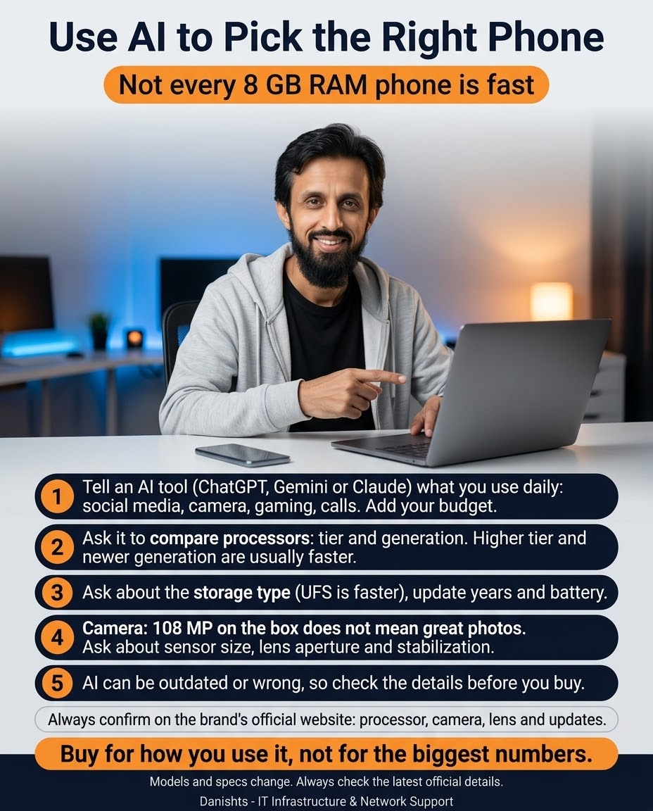
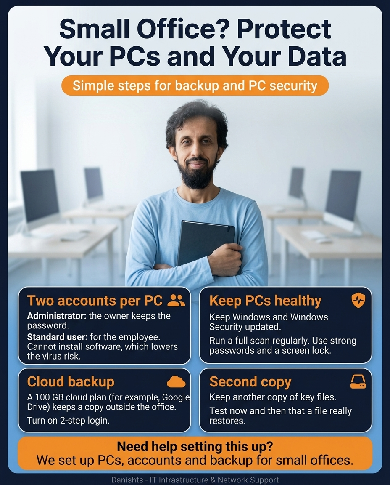

¿Tu personal está pegando datos privados en herramientas de IA?
Reglas sencillas para usar la IA de forma segura en el trabajo.
Leer más →
De plugins y herramientas a prompts de IA
El trabajo que antes necesitaba una PC ahora se hace desde mi teléfono.
Leer más →
¿Quieres aprender IA? De lo básico a tu primera automatización
5 pasos: empieza pequeño, practica a diario, automatiza con inteligencia.
Leer más →
6 preguntas para hacer cada mes a tu persona de IT
No necesitas ser técnico. Necesitas un informe mensual.
Leer más →
ACoS de equilibrio: ¿cuánto puedes gastar en anuncios de Amazon?
Conoce tu límite antes de lanzar.
Leer más →
Usa la IA para elegir el teléfono correcto: no todos los teléfonos de 8 GB de RAM son rápidos
No todos los teléfonos de 8 GB de RAM son rápidos.
Leer más →
Documentación de TI para una oficina pequeña: 3 hojas que debes mantener
Oficina pequeña o grande, anota lo que importa.
Leer más →
Qué vender en Amazon: elige tu primer producto según tu presupuesto
Todo producto con demanda tiene competencia. Empieza por tu presupuesto.
Leer más →
Cómo elegir un proveedor para Amazon: lista de verificación de Alibaba antes de pagar
Dónde buscar y cómo comprobar a un proveedor.
Leer más →
Palabras clave del listing de Amazon: un plan sencillo paso a paso
Y qué escribir en cada campo.
Leer más →
Estrategia de PPC de Amazon para un producto nuevo: Manual vs Automática
Empieza simple, aprende rápido, quédate con lo que funciona.
Leer más →
Cambios en las tarifas FBA de Amazon en 2027 (EE. UU.): fechas clave y qué hacer
Fechas clave y 3 pasos para vendedores de la tienda de EE. UU.
Leer más →
La IA está cambiando los empleos: 5 cosas que hacer desde hoy
Tómala en serio. Empieza hoy.
Leer más →
Cómo aprender IA desde cero: un camino de 6 pasos para principiantes
No hace falta programar. Con conocimientos básicos de computación es suficiente.
Leer más →
Automatización con IA para tu negocio: bases de WhatsApp y correo
Deja que la IA haga el trabajo repetitivo de tu negocio.
Leer más →
¿Internet lento en la oficina? 5 reglas para gestionarlo, no solo comprar más velocidad
5 reglas sencillas para una red de oficina estable.
Leer más →
¿Oficina pequeña? Protege tus PC y tus datos
4 pasos sencillos para la seguridad y el respaldo de tus PC.
Leer más →
ACoS vs TACoS: ¿cuál es la diferencia?
Dos números, dos preguntas distintas, con un ejemplo sencillo.
Leer más →
¿Tu CCTV está a salvo de hackers?
Riesgos de las cámaras IP y 6 soluciones sencillas.
Leer más →
CCTV: DVR vs NVR vs cámara IP
Qué sistema conviene a tu oficina, y la configuración adecuada según el tamaño.
Leer más →
Amazon PPC: el costo que se siente a ciegas
Campañas automáticas vs manuales, y por qué planificar primero el presupuesto.
Leer más →
Correo empresarial: Google Workspace vs Microsoft 365 vs cPanel
cPanel, Google Workspace o Microsoft 365: ventajas, desventajas y 4 reglas de configuración.
Leer más →
Cómo preparar las imágenes de tu listado de Amazon
Reglas de la imagen principal, 5 tipos de imagen y una lista de 6 pasos.
Leer más →
Por qué algunos productos de Amazon fallan en la investigación
Qué etapa puede detener un producto, y la revisión final antes de pagar.
Leer más →
¿PC lenta? No siempre es el internet
Una lista sencilla de 6 pasos para cuidar tu PC dos veces al mes.
Leer más →
¿Qué hace segura una red de oficina? 6 reglas de IT
Auditoría de PC, ancho de banda, VLAN, puntos de acceso, respaldo y dominio AD.
Leer más →
Hay internet, pero los usuarios de WiFi no pueden imprimir
Por qué ocurre cuando existen dos redes, y la solución sencilla.
Leer más →
LAN vs WiFi en la oficina: ¿qué debe ir por cable?
Qué dispositivos van por LAN, cuáles por WiFi, y por qué.
Leer más →
¿Qué hace que un producto de Amazon sea el definitivo? 7 pasos
De la investigación del producto al PPC y al lanzamiento.
Leer más →
Negociación con proveedores de Amazon: habla con 5 a 8 proveedores
Cómo comparar proveedores y dejar las condiciones por escrito.
Leer más →
Amazon PPC: por qué todo lanzamiento nuevo necesita un plan
Presupuesto, puja y ACoS explicados con un ejemplo sencillo.
Leer más →